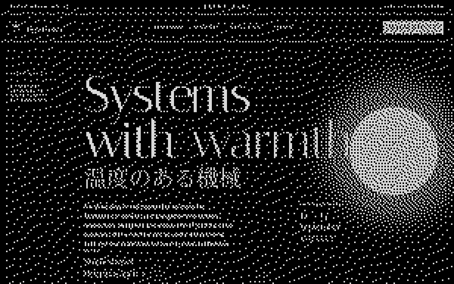

Er hemsida är nutidens visitkort


Alunix. Digital byrå. Design, utveckling, system. Boka ett möte: kontakt@alunix.se.
Det första intrycket är digitalt.
Skärmen möter besökaren före texten.
Innan ett ord är läst bär layout och bild hela argumentet.
Vi hjälper er att synas på rätt sätt.


Vår process:
Från samtal till lanserad sida.
Webbdesign, design och system. Allt på ett ställe.

-
Uppstart
Vi börjar med ett samtal om er verksamhet samt vad ni vill att sidan ska göra för er. Utifrån det skapar vi ett initialt underlag som ni rättar innan det går till ritbordet.
-
Planering
Vi ritar strukturen som en skiss innan vi formger något. Där ser ni vilka sidor som behövs och vad varje sida ska få besökaren att göra, mobilen först.
-
Design
När strukturen står formger vi sidan efter er verksamhet. Förslaget lägger vi på en testadress, där ni ser det på er egen telefon och säger till innan det går till bygge.
-
Utveckling
Vi bygger sidan i kod från grunden, utan färdig mall, så att den laddar snabbt. Texter och bilder ändrar ni själva, och vill ni lägga till mer bygger ni vidare på det vi lämnat.
-
Innehåll
Ni behöver inte ha något färdigt. Det ni har bearbetar vi, bygger vidare på och kompletterar där något saknas. Texten skriver vi åt er, om ni inte vill ha er egen.
-
Lansering
Innan sidan publiceras går vi igenom varje länk, formulär och bild. Vi testar den med tangentbord och skärmläsare, på telefon och på dator, och visar er hur ni ändrar innehållet själva.
-
Förvaltning
Vi finns kvar efter lansering. Nya sidor och ändringar går samma väg som bygget, så ni ser dem på testadressen innan era kunder gör det. Har ni en fråga mejlar ni oss på kontakt@alunix.se.
Exempelcase
Calyx
Florist, Stockholm
Sidan öppnar som ett omslag
Vi lade rubriken direkt på fotot och utgåvans nummer i nedre hörnet, som på ett magasin. En bukett säljer på hur den ser ut, så fotot fick nästan hela första skärmen.
En serif, också i namnet
Namnet, rubrikerna och brödtexten går i samma serif, och kursiven sköter betoningen. Ett andra rubriktypsnitt hade dragit åt reklam. Bara etiketterna fick ett eget, skrivmaskinslikt typsnitt.
Varje bild har ett nummer
Fotona står parvis, och under varje bild skrev vi uppdragets nummer och adress. Då läses de som beställningar ateljén har levererat.
Utbudet som prislista
Veckans utbud blev en lista med löpnummer, namn och pris i högerkant. Ett rutnät med kort hade krävt nytt foto varje vecka. Med en lista räcker det att skriva om en rad.
Ett mejl räcker
Där ett formulär brukar stå satte vi en e-postadress. Besökaren skriver om rummet och ljuset med egna ord, och ateljén svarar med vad som finns den veckan.


Alla har rätt till bra design.
Med bra design menar vi det ni just har sett. Den nivån får ni på varje rad nedan, och sidan ritar vi efter era egna behov och önskemål.
Berätta om er verksamhet.
Så berättar vi vad vi kan göra för er.